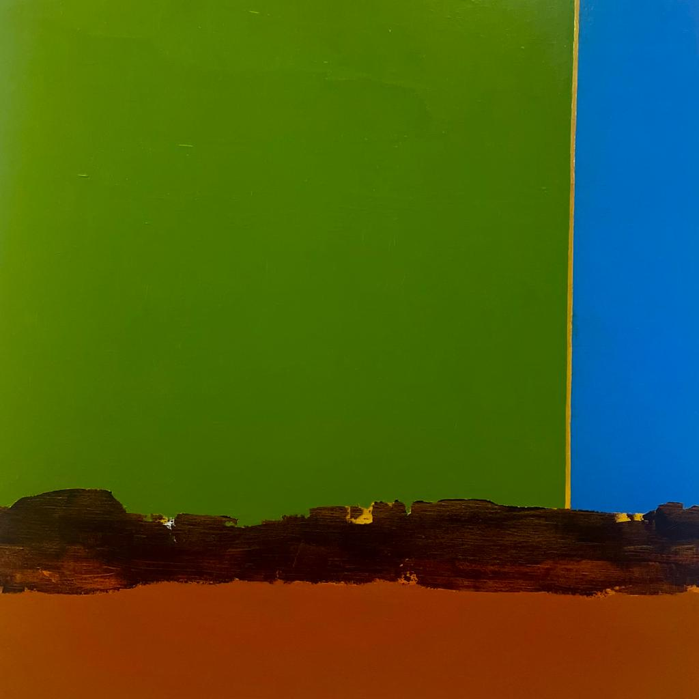
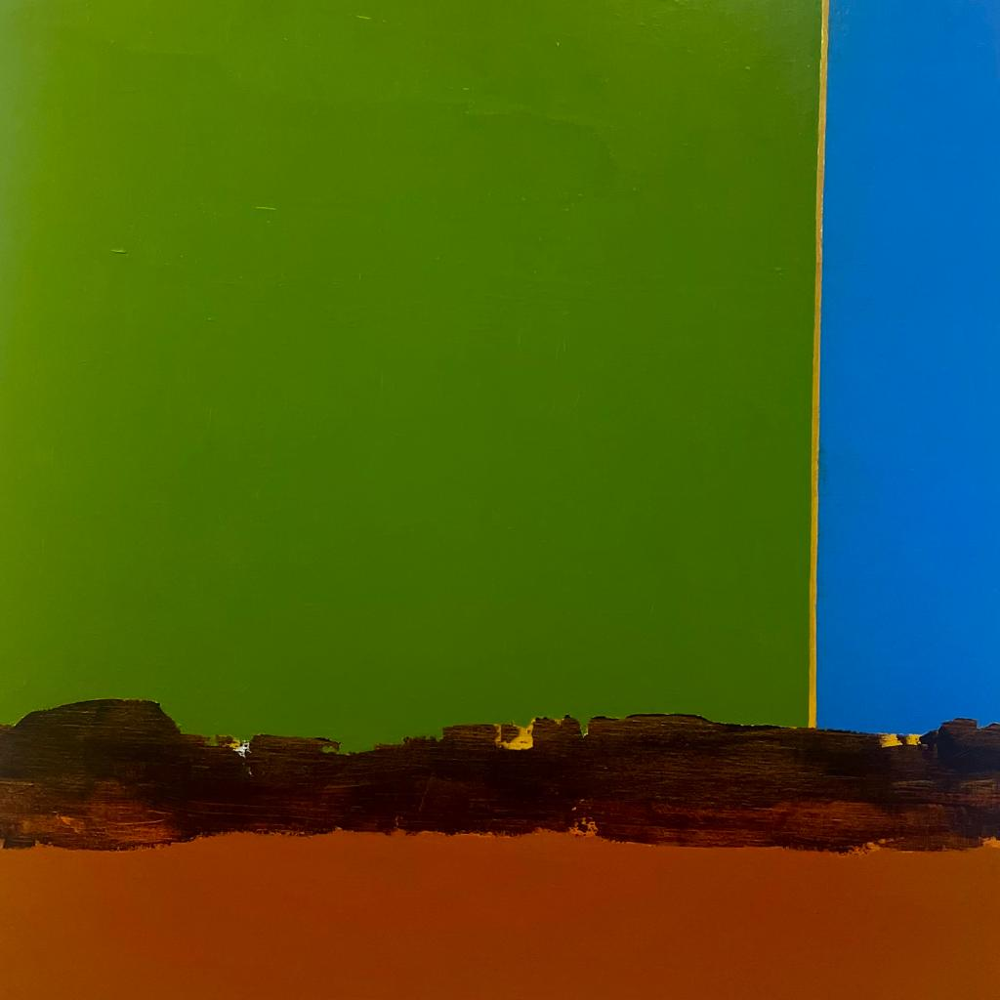
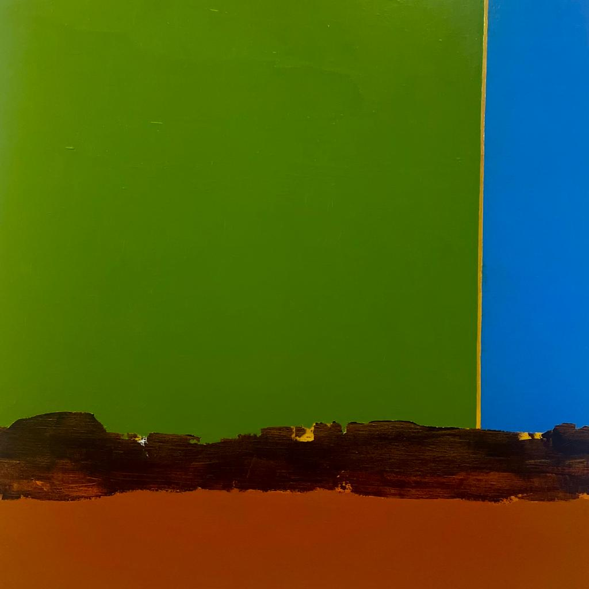

When : Weekdays, Satturdays & Public holydays and Sundays from 07:00 - 23:00 o clock. However the Media complex is only opend weekdays 09:00 - 18:00 o clock. Better visi during that time.
Where : At pinpoint 1
What to bring : Bring your Student ID card or alternativly download and login to the MySNU app. You need your id card or the QR code of the app to enter to the library and reserve seets.
What to do : On the 4th floor, we got these awesome private seminar rooms. You can totally book them for a solid 3 hours, but make sure to do it a day in advance 'cause they're usually all booked up on the day. Oh, and here's the kicker — you need at least three more buddies to book the room with you. Team effort, ya know? Now, weekdays you should totally check out the garden at the 5th floor. You can come and go as you please and check out the sweet terrace for some chill vibes. Perfect spot to unwind and relax. But hold up, let me tell you about the 6th floor — the mediaplex. It's seriously cool stuff. They've got massive TVs in the back, VR glasses, and a ton of other tech goodies. You gotta see it for yourself, no doubt! As we move on to the 7th floor, we've got a chill reading room and a little pond. So peaceful, you can dive into a good book and enjoy the tranquility. Now, up on the 8th floor, we've got not just one, but two reading rooms. One exclusively for the graduate students. In the massive reading room, there's this huge wooden sofa with cozy heating from underneath. You can even catch some zzzzz's there if you feel like it. Oh, and one last thing—the left side is for the dudes and the right side is for the ladies. Just so you know!

Next Magic Word : The next Magic Word is the name of the painter of the picture behind the twitching cube - 8 letters all caps no spacing nor extra characters. You find the painting in the library its alsmost as toll then me.
Next location: Between the student center (Building 63) and the Post office (Building 60)
Reserving a Room : There are two ways to make reservations, and it's pretty straightforward. If you want to reserve a spot in the reading room just for yourself, head over to one of the booking machines in the library. Hold your card or App against it, pick your seat, and don't forget to log out before your time is up. Now, if you're looking to reserve a seminar room, it's a bit more involved. First, visit the website Library Website. Click on "4F" and then choose one of those cool blue rooms. You'll see the available times highlighted in yellow for each room. Pick one on the right side panel. Next, you'll get redirected to a form that you need to fill out. This is where things get difficult. Make sure you have the exact IDs of three more pals handy. Type in their names (ALL CAPS with spaces if they use Roman letters) and their ID numbers without dashes. Don't forget to click on one of those six circles and hit submit at the bottom. Boom! You're done! That's all there is to it. Enjoy your reservation and have a great time!